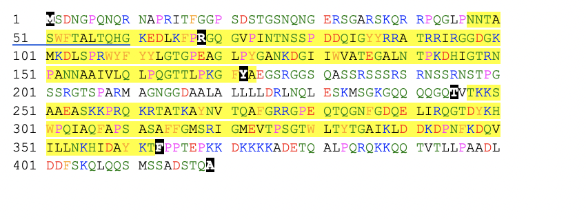

This chapter is adapted from the following publication:
Cubuk, J., Alston, J.J., Incicco, J.J., Singh, S., Stuchell-Brereton, M.D., Ward, M.D., Zimmerman, M.I., Vithani, N., Griffith, D., Wagoner, J.A., Bowman, G.R., Hall, K.B., Soranno, A., The SARS-CoV-2 nucleocapsid protein is dynamic, disordered, and phase separates with RNA, Available on Biorxiv: https://doi.org/10.1101/2020.06.17.158121 [2]
Disorder prediction was performed using IUPred, with additional analysis and sequence parsing done with localCIDER and protfasta, respectively [496, 497, 498]
Amino acid sequence of the N protein used in simulations. Highlighted regions delineate folded domains. Underline bolded residues identify the sites of dyes for single-molecule fluorescence experiments.

All simulations were performed at 330 K and at 15 mM NaCl, as have been used previously in a variety of systems [499, 496, 499, 338, 401]. Simulation analysis was performed with MDTraj and camparitraj (http://ctraj.com/) [148, ?]. For IDR only simulations all degrees of freedom were fully sampled (backbone and sidechain dihedral angles and rigid-body positions) as is standard in CAMPARI Monte Carlo simulations [398]. For simulations of IDRs in the context of folded domains, the backbone dihedral angles of the folded domains were held fixed while all sidechains were fully sampled, as were backbone dihedral angles for the disordered regions, as applied previously [500]. The folded state starting structures were obtained from PDB structures (listed below).
For IDR-only simulations 30-40 independent simulations were run generating final ensembles of 40-60 K conformations. For simulations of IDRs in the context of folded domains, the number of independent simulations and the length of the simulation varied. For the NTD-RBD simulations 400 independent simulations were run, with 2 independent simulations per starting seed from MD simulations (see methods below) leading to a final ensemble of ∼400 K conformations (24 M steps per simulation). For the RBD-LINK-dimerization construct, ten independent simulations were run for a final ensemble of 32 K conformers (66 M steps per simulation). For the dimerization-CTD construct 40 independent simulations were run providing a final ensemble of 40 K conformations (66 M steps per simulation). For a complete description of simulation details see Table D.4.
For the NTD-RB construct, we used a sequential sampling approach in which long timescale MD simulations of the RBD in isolation performed on the Folding@home distributed computing platform were first used to generate hundreds of starting conformations [37, 403]. Those RBD conformations were then used as starting structures for independent all-atom Monte Carlo simulations. Monte Carlo simulations were performed with the ABSINTH forcefield in which the RBD backbone dihedral angles are held fixed but the NTD is fully sampled, as are RBD sidechains. The RBD starting structure used was extracted from the 6VYO PDB crystal structure, which is equivalent to the 6YI3 NMR structure.
For RBD-Link-dimerization domain simulations, we opted to use a single starting seed structure for the folded domains based on the NMR and crystal-structure conformations for the RBD and dimerization domains, respectively. To generate the monomeric starting structure of the dimerization domain, we first built a homology model of the SARS-CoV-2 dimerization dimer from the NMR structure of the SARS dimerization structure (PDB: 2jw8) using SWISS-MODEL [1, 306]. We chose this strategy because at the time, no dimerization structure existed, a situation that has since resolved itself [314]. Nevertheless, the SARS and SARS-CoV-2 dimerization domains are essentially identical, such that this is a minor detail.
For dimerization domain-CTD simulations, a single starting structure for the dimerization domain was again used, selected after MD simulations. Having generated a homology model, we extracted a single protomer from the dimeric structure and ran molecular dynamics simulations to identify equilibrated starting structures. In running initial simulations we discovered that as a monomer, the first 21 residues appear disordered, in agreement with sequence predictions (Fig. D.1A) but in contrast to their behavior in the dimeric structure (Fig. D.1C). As a result, we choose to also model these residues as fully disordered. A single starting seed conformation was used for all dimerization-CTD simulations.
Excluded volume (EV) simulations were performed using the same setup, but with a modified Hamiltonian under which solvation, attractive Lennard-Jones, and polar (charge) interactions are scaled to zero, as described previously [329].
All molecular dynamics simulations of SARS-CoV-2 nucleoprotein were performed with Gromacs 2019 using the AMBER03 force field with explicit TIP3P solvent [501, 146, 143]. Simulations were prepared by placing the starting structure (PDB ID: 6VYO) in a dodecahedron box that extends 1.0 Å beyond the protein in any dimension. The system was then solvated (29125 atoms), and energy minimized with a steepest descents algorithm until the maximum force fell below 100 kJ/mol/nm using a step size of 0.01 nm and a cutoff distance of 1.2 nm for the neighbor list, Coulomb interactions, and van der Waals interactions. For production runs, all bonds were constrained with the LINCS algorithm and virtual sites were used to allow a 4 fs time step [228, 226]. Cutoffs of 1.1 nm were used for the neighbor list with 0.9 for Coulomb and van der Waals interactions. The Verlet cutoff scheme was used for the neighbor list. The stochastic velocity rescaling (v-rescale) thermostat was used to hold the temperature at 300 K [224]. Conformations were stored every 20 ps.
The FAST algorithm was used to enhance conformational sampling and quickly explore the dominant motions of nucleoprotein [35, 42]. FAST-pocket simulations were run for 6 rounds, with 10 simulations per round, where each simulation was 40 ns in length (2.4 μs aggregate simulation). The FAST-pocket ranking function favored restarting simulations from states with large pocket openings. Additionally, a similarity penalty was added to the ranking to promote conformational diversity in starting structures, as has been described previously [278]. The FAST dataset was clustered using a k-centers algorithm based on RMSD between frames using backbone heavy atoms (C, Cα, Cβ, N, O) to generate 1421 discrete states, which were then launched on the distributed computing platform Folding@home [37, 403].
Furthering conformational sampling and enhancing statistics, Folding@home produced 500 μs of aggregate simulation. A final k-centers clustering was performed with the combined Folding@home and FAST data using Enspara (https://github.com/bowman-lab/enspara) [39]. This clustering was performed the same as described above and generated 200 discrete states that capture maximal diversity in nucleoproteins’ conformational ensemble. These states were then used as the basis for CAMPARI simulations.
The NTD and RBD combined are 173 residues of folded and disordered protein, which raises a significant challenge for all-atom sampling. To address this we leveraged a novel approach in which we first ran several microsecond of all-atom molecular dynamics simulations of RBD alone using the Folding@Home platform and the FAST approach for enhanced conformational sampling [37, 403, 35]. We then identified 200 conformationally distinct states based on these simulations which we used as “seeds” for the RBD. Using these seeds, we reconstructed the previously missing NTD and ran all-atom Monte Carlo simulations in which the NTD was fully sampled, the RBD sidechains are fully sampled, but the RBD backbone dihedral angles are held fixed. Multiple replicas of each starting conformation were run, giving us a total ensemble of ∼400 K conformations. In parallel, we also ran simulations of the NTD in isolation, enabling an assessment of the impact of the folded domain.
Coarse-grained simulations were performed using the PIMMS software package [402, 338]. PIMMS is a Monte Carlo lattice-based simulation engine in which each bead engages in anisotropic interactions with every adjacent lattice site. Moves used here were cluster translation/rotation moves and single-bead perturbation moves. Specifically, every simulation step, each bead in the system is sampled to move to adjacent sites in random order 503 of times multiplied by a factor that reflects the length of the chain. Every 100 moves (on average) a cluster of chains is randomly selected and translated or rotated, where a cluster reflects a collection of two or more chains in direct contact. This moveset provides changes to the system that reflect physical movements expected in a dynamical system, allowing us to - for equivalently sized systems - compare the apparent dynamics of assembly, as has been done previously [502, 503, 504, 505]. We repeated the simulations presented using a range of different movesets and, while convergence varied from set-to-set, we always observed analogous results.
All simulations were performed in a 70 x 70 x 70 lattice-site box using period boundary conditions. The results reported are averaged over the final 20% of the simulation to give average values after equivalent numbers of MC steps. The “polymer” is represented as a 61-residue polymer with either a central high-affinity binding site or not. The binder is a 2-bead species. Every simulation was run for 20 x 109 Monte Carlo steps, with four independent replicas. Simulations were run with 1,2,3,4 or 5 polymers and 50, 75, 100, 125, 150, 175, 200, 250, 300, 400 binders.
If our simulations are run in a way deliberately designed to rapidly reach equilibrium using enhanced sampling approaches eventually all single-polymer condensates coalesce into one large multi-polymer condensate. Hence, our simulations are deliberately designed explore a regime in which single-polymer condensates are metastable.
SARS-CoV2 Nucleocapsid protein (NCBI Reference Sequence: YP_009724397.2)
including an N term extension containing His9-HRV 3C protease site –
CATCATCACCATCATCATCATCACCACCTCGAAGTTCTGTTCCAAGGCCCGATGAGTGATAACGGTCCCCAGAATCAACG
GAATGCGCCCAGAATCACGTTCGGCGGTCCAAGCGACAGTACAGGTTCGAATCAGAATGGTGAACGCTCTGGGGCCCGA
AGCAAACAGCGTCGTCCACAGGGTTTGCCGAACAATACGGCTAGCTGGTTCACTGCGCTGACGCAGCACGGAAAAGAAG
ACTTAAAATTTCCGCGAGGCCAGGGGGTCCCGATTAATACTAACTCCTCCCCTGACGATCAAATTGGTTATTATCGTCG
TGCAACCCGCCGTATCCGCGGCGGAGACGGTAAAATGAAAGATCTGTCACCGCGCTGGTATTTTTACTACCTGGGAACA
GGTCCTGAAGCAGGCTTGCCGTATGGCGCTAACAAAGATGGCATTATCTGGGTGGCTACCGAGGGTGCCCTTAATACGC
CGAAAGATCATATTGGAACCCGTAACCCAGCCAATAACGCAGCAATCGTACTGCAGCTGCCGCAGGGGACAACCCTGCC
GAAAGGCTTTTATGCGGAAGGGAGTCGTGGCGGCAGCCAAGCCAGCTCCCGTAGCTCCTCGCGCTCTCGCAACTCCTCG
CGGAATAGTACACCGGGTTCATCACGCGGCACCTCGCCGGCACGCATGGCTGGCAACGGGGGGGATGCGGCTTTGGCGT
TACTTTTACTGGATAGGCTTAACCAGTTGGAAAGTAAAATGAGCGGTAAAGGCCAGCAGCAGCAGGGTCAGACTGTGAC
CAAAAAGAGCGCGGCAGAGGCGTCGAAAAAACCTAGACAAAAGCGTACTGCGACCAAAGCCTACAATGTTACGCAGGCA
TTCGGCCGGCGCGGTCCGGAACAAACCCAGGGCAACTTTGGTGACCAGGAGCTGATTCGTCAGGGAACCGATTACAAAC
ACTGGCCACAGATCGCGCAATTTGCCCCCTCGGCGTCAGCCTTTTTTGGTATGTCTCGCATTGGGATGGAGGTAACCCC
GTCTGGCACGTGGCTGACGTACACGGGCGCTATAAAGCTGGATGATAAAGATCCGAACTTCAAAGACCAGGTGATCTTA
CTGAACAAACATATTGACGCCTATAAAACGTTCCCCCCTACTGAACCTAAGAAAGATAAAAAAAAAAAGGCCGATGAAA
CCCAAGCGCTACCACAACGCCAGAAAAAGCAGCAGACCGTCACCCTCCTGCCGGCAGCGGACCTCGACGATTTTTCTAA
GCAACTGCAACAAAGCATGTCAAGCGCCGATAGTACACAGGCGTAA - was cloned into the
BamHI EcoRI sites in the MCS of pGEX-6P-1 vector (GE Healthcare) to express the protein product:
GST-LEVLFQGPLGSHHHHHHHHH
LEVLFQGPMSDNGPQNQRNAPRITFGGPSDSTGSNQNGERSGARSKQRRPQGLPNNTASWFTALTQHGKEDLKFPRGQGV
PINTNSSPDDQIGYYRRATRRIRGGDGKMKDLSPRWYFYYLGTGPEAGLPYGANKDGIIWVATEGALNTPKDHIGTRNP
ANNAAIVLQLPQGTTLPKGFYAEGSRGGSQASSRSSSRSRNSSRNSTPGSSRGTSPARMAGNGGDAALALLLLDRLNQL
ESKMSGKGQQQQGQTVTKKSAAEASKKPRQKRTATKAYNVTQAFGRRGPEQTQGNFGDQELIRQGTDYKHWPQIAQFAP
SASAFFGMSRIGMEVTPSGTWLTYTGAIKLDDKDPNFKDQVILLNKHIDAYKTFPPTEPKKDKKKKADETQALPQRQKK
QQTVTLLPAADLDDFSKQLQQSMSSADSTQA. Site-directed mutagenesis was performed on the
His9-SARS-CoV2 Nucleocapsid pGEX vector to create M1C R68C, Y172C T245C, and F363C
A419C variant N protein constructs. All cloning and site-directed mutagenesis steps were performed
by Genewiz and sequences were verified using sanger sequencing.
Both GST-His9-SARS-CoV2 M1C-R68C and Y172C-T245C Nucleocapsid variants were expressed recombinantly in BL21 Codon-plus pRIL cells (Agilent). 4L cultures were grown in LB medium containing carbenicillin (100 ug/mL) to OD600 ∼ 0.6 and induced with 0.2 mM IPTG for 12 hours at 16ºC. Harvested cells were lysed with sonication at 4ºC in lysis buffer (50mM Tris pH 8, 500 mM NaCl, 10% glycerol, 10 mg/mL lysozyme, 5 mM BME, cOmplete™ EDTA-free Protease Inhibitor Cocktail (Roche), DNAse I (NEB), RNAse H (NEB)). The supernatant was cleared by centrifugation (37000 rpm for 1 hr) and bound to an HisTrap FF column (GE Healthcare) in buffer A (50 mM Tris pH 8, 500 mM NaCl, 10% glycerol, 20mM imidazole, 5 mM BME). GST-His9-N protein fusion was eluted with buffer B (buffer A + 500 mM imidazole) and dialyzed into cleavage buffer (50 mM Tris pH 8, 50 mM NaCl, 10% glycerol, 1 mM DTT) with HRV 3C protease, thus cleaving the GST-His9-N fusion yielding FL N protein with two additional N-term residues (GlyPro). FL N protein was then bound to an SP sepharose FF column (GE Healthcare) and eluted using a gradient of 0-100% buffer B (buffer A: 50mM Tris pH 8, 50mM NaCl, 10% glycerol, 5 mM BME, buffer B: buffer A + 1 M NaCl) over 100 min. Purified N protein variants were analyzed using SDS-PAGE and verified by electrospray ionization mass spectrometry (LC-MS). Concentrations were determined spectroscopically in 50mM Tris (pH 8.0), 500mM NaCl, 10% (v/v) glycerol using an extinction coefficient = 42530 M−1cm−1
Both GST-His9-SARS-CoV2 wild-type and F363C A419C Nucleocapsid variants were expressed recombinantly in Gold BL21(DE3) cells (Agilent). 4 L cultures were grown in LB medium with carbenicillin (100 ug/mL) to OD600 ∼ 0.6 and induced with 0.2 mM IPTG for 12 hours at 16ºC. Harvested cells were lysed with sonication at 4ºC in lysis buffer (listed above). The supernatant was cleared by centrifugation (37000 rpm for 1 hr) and the pellet was resuspended in 50 mM Tris pH 8, 500 mM NaCl, 10% glycerol, 6 M Urea, 5 mM BME and incubated at 4ºC for one hour. The resuspension was cleared by centrifugation (37000 rpm for 1hr) and the GST-His9-N protein in the supernatant was bound to a FF HisTrap column (GE Healthcare) in buffer A (50 mM Tris pH 8, 500 mM NaCl, 10% glycerol, 20 mM imidazole, 5 mM BME) containing 6 M Urea. The column was then washed with buffer A allowing the protein to refold on the column. The GST-His9-N protein fusion was then eluted with buffer B (buffer A containing 500 mM imidazole) and dialyzed into cleavage buffer (50 mM Tris pH8, 50 mM NaCl, 10% glycerol, 1 mM DTT) containing HRV 3C protease. FL N protein was then bound to an SP sepharose FF column (GE Healthcare) and eluted using a gradient of 0-100% buffer B (buffer A: 50mM Tris pH 8, 50 mM NaCl, 10% glycerol, 5 mM BME, buffer B: buffer A + 1 M NaCl) over 100 min. Purified N protein variants were analyzed using SDS-PAGE and verified by electrospray ionization mass spectrometry (LC-MS). Protein concentrations of stock solutions were determined spectroscopically in 50mM Tris (pH 8.0), 500mM NaCl, 10% (v/v) glycerol using an extinction coefficient = 42530 M−1cm−1
All Nucleocapsid variants were labeled with Alexa Fluor 488 maleimide (Molecular Probes) under denaturing conditions in buffer A (50mM Tris pH8, 50mM NaCl, 10% glycerol, 6M Urea, 1mM DTT) at a dye/protein molar ratio of 0.7/1 for 2 hrs at room temperature. Single labeled protein was isolated via ion-exchange chromatography (Mono S 5/50 GL, GE Healthcare - protein bound in buffer A and eluted with 0-100% buffer B (buffer A + 1 M NaCl) gradient over 100 min) and UV-Vis spectroscopic analysis to identify fractions with 1:1 dye:protein labeling. Single labeled Alexa Fluor 488 maleimide labeled N protein was then subsequently labeled with Alexa Fluor 594 maleimide at a dye/protein molar ratio of 1.3/1 for 2 hrs at room temperature. Double labeled (488:594) protein was then further purified via ion-exchange chromatography (Mono S 5/50 GL, GE Healthcare - see above).
Single-molecule fluorescence measurements were performed with a Picoquant MT200 instrument (Picoquant, Germany). For single-molecule FRET measurements, a diode laser (LDH-D-C-485, PicoQuant, Germany) was synchronized with a supercontinuum laser (SuperK Extreme, NKT Photonics, Denmark), filtered by a z582/15 band pass filter (Chroma) and pulsed at 20 MHz for pulsed interleaved excitation (PIE) (Müller et al., 2005) of labeled molecules. Emitted photons were collected with a 60x1.2 UPlanSApo Superapochromat water immersion objective (Olympus, Japan), passed through a dichroic mirror (ZT568rpc, Chroma, USA), and filtered by a 100 μm pinhole (Thorlabs, USA). Photons are counted and accumulated by a HydraHarp 400 TCSPC module (Picoquant, Germany). For FRET-FCS measurements, the same diode laser was used in continuous-wave mode to excite the donor dye. Photons emitted from the sample were collected by the objective, and scattered light was suppressed by a filter (HQ500LP, Chroma Technology) before the emitted photons passed the confocal pinhole (100 mm diameter). The emitted photons were then distributed into four channels, first by a polarizing beam splitter and then by a dichroic mirror (585DCXR, Chroma) for each polarization. Donor and acceptor emission was filtered (ET525/50m or HQ642/80m, respectively, Chroma Technology) and then focused on SPAD detectors (Excelitas, USA). The arrival time of every detected photon was recorded with a HydraHarp 400 TCSPC module (PicoQuant, Germany).
FRET experiments were performed by exciting the donor dye with a laser power of 100 μW (measured at the back aperture of the objective). For pulsed interleaved excitation experiments, the power used for exciting the acceptor dye was adjusted to match a total emission intensity after acceptor excitation to the one observed upon donor excitation (between 50 and 70 mW). Single-molecule FRET efficiency histograms were acquired from samples with protein concentrations between 50 pM and 100 pM. Trigger times for excitation pulses (repetition rate 20 MHz) and photon detection events were stored with 16 ps resolution.
For fluorescence correlation spectroscopy (FCS) experiments, acceptor-donor labeled samples with a concentration of 100 pM were excited by either the 485 nm diode laser or the supercontinuum laser at the powers indicated above. However, in the experiments on protein oligomerization, due to an increase in the fluorescence background upon addition of unlabeled protein above 1 μM, only the correlations corresponding to direct acceptor excitation (582 nm) have been considered reliable for the analysis.
For nsFCS, FRET samples of acceptor-donor labeled protein with a concentration of 100 pM were excited by the same diode laser but in continuum wavelength mode.
All measurements were performed in 50 mM Tris pH 7.32, 143 mM β-mercaptoethanol (for photoprotection), 0.001% Tween 20 (for surface passivation) and GdmCl at the reported concentrations. All measurements were performed in uncoated polymer coverslip cuvettes (Ibidi, Wisconsin, USA), which significantly decrease the fraction of protein adhering to the surface (compared to normal glass cuvettes) under native conditions. For comparison, experiments have been performed also in glass cuvette coated with PEG, which provided analogous results to the polymeric cuvette.
Each sample was measured for at least 30 min at room temperature (295 ± 0.5 K).
Fluorescence bursts from individual molecules were identified by time-binning photons in bins of 1 ms and retaining the burst if the total number of photons detected after donor excitation was larger than 30. Transfer efficiencies for each burst were calculated according to E = nA∕(nA + nD) where nD and nA are the number of donor and and receptor photons, respectively. Corrections for background, acceptor direct excitation, channel crosstalk, differences in detector efficiencies, and quantum yields of the dyes were applied (Schuler et al., 2012). The labeling stoichiometry ratio S was computed accordingly to
|
| (D.1) |
where IDand IA represent the total intensities observed after donor and acceptor excitation and γPIE provides a correction factor to account for differences in the detection efficiency and laser intensities. Bursts with stoichiometry corresponding to 1:1 donor:acceptor labeling (in contrast to donor and acceptor only populations) were selected and finally from the selected bursts a histogram of transfer efficiencies is constructed. Variations in the selection criteria for the stoichiometry ratio do not impact significantly the observed mean transfer efficiency (within experimental errors).
To estimate the mean transfer efficiency and deconvolve multiple populations (e.g for the NTD construct) from the transfer efficiency histograms, each population was approximated with a Gaussian peak function. For fitting more than one peak, the histogram was analyzed with a sum of Gaussian peak functions. For the conversion of transfer efficiency to distances, we used the value of the Förster radius for Alexa488 and Alexa594 previously determined and reported in literature, R0 = 5.4 nm [506]. We further correct the value accounting for the dependence of the Förster radius on the solution refractive index. The changes in refractive index caused by increasing concentrations of GdmCl or KCl were measured with an Abbe refractometer (Bausch and Lomb, USA).
Finally, we estimated a systematic error on transfer efficiency of ± 0.03, based on the variation of transfer efficiency of the same reference samples after different calibrations of the instrument over the last two years. Standard deviation of the transfer efficiency for multiple repeats of the NTD, LINK, and CTD constructs is equal or less than ± 0.01. Since we aim for a comparison with simulations, here we consider the systematic error as the larger source of error and we propagate the corresponding effect on all the calculated distances.
A quantitative interpretation of this transfer efficiency in terms of distance distribution requires the investigation of protein dynamics. A first method to assess whether the transfer efficiency reports about a rigid distance (e.g. structure formation or persistent interaction with the RBD) or is the result of a dynamic average across multiple conformations is the comparison of transfer efficiency and fluorescence lifetime.The interdependence of these two factors is expected to be linear if the protein conformations are identical on both timescales (nanoseconds as detected by the fluorescence lifetime, milliseconds as computed from the number of photons in each burst). Alternatively, protein dynamics give rise to a departure from the linear relation and an analytical limit can be computed for configurations rearranging much faster than the burst duration. The dependence of the fluorescence lifetimes on transfer efficiencies determined for each burst was compared with the behavior expected for fixed distances and for a chain sampling a broad distribution of distances. For a fixed distance, R, the mean donor lifetime in the presence of acceptor is given by
|
| (D.2) |
where tD is the lifetime in the absence of acceptor, and
|
| (D.3) |
For a chain with a dye-to-dye distance distribution P(R), the donor lifetime is
|
| (D.4) |
where
|
| (D.5) |
is the time-resolved fluorescence emission intensity following donor excitation. A similar calculation can be carried out for describing the acceptor lifetime [507] delay given by
|
| (D.6) |
Donor and acceptor lifetimes at different concentrations of GdmCl were analyzed by fitting subpopulation-specific time-correlated photon counting histograms after donor and acceptor excitation, respectively.
Multiparameter detection allows also excluding possible artifacts, such as insufficient rotational averaging of the fluorophores or quenching of the dyes. Subpopulation-specific anisotropies were determined for both donor and acceptor of all three constructs for NTD, LINK, and CTD, and values were found to vary between 0.1 and 0.2 for the donor and between 0.1 and 0.2 for the acceptor, sufficiently low to assume as a good approximation for the orientational factor κ2 = 2∕3.
In order to determined changes in the hydrodynamic radius (Rh) of the protein, FCS correlations were analyzed assuming 3D diffusion of the molecule across a three dimensional Gaussian profile of the confocal volume (Rigler, Eur Blophys J (1993) 22:169-175). For 1 diffusing species, and in the absence of photophysical transitions in the time scale of the lag times analyzed, this formalism amounts to the following time autocorrelation function.
|
| (D.7) |
where N is the average number of molecules in the confocal volume, τD is the diffusion time along the xy plane, α is the eccentricity of the three dimensional Gaussian observational volume.
|
| (D.8) |
where D is the 3D translational diffusion coefficient and ωxy is the radius from the center of the laser beam at which the light intensity decreases e2 times from its maximum value at the center. α = ωz/ωxy.
Additionally, in order to account for contributions of the photophysics of the fluorophore to the correlation observed in the μs timescale, we added two triplet terms multiplying the diffusion correlation term (see for example Krichevsky, Rep. Prog. Phys. 65 (2002) 251–297). The overall equation that we fit to the FCS traces is then
|
| (D.9) |
where τT1, τT2,cT1,andcT1, denotes the characteristic times and amplitudes of the contributions of two triplet states tog(τ). Parameters τD,τT1,τT2,cT1,cT2andN were fitted by least square nonlinear regression analysis for each concentration of unlabeled protein tested (Fig. D.13A-B), while α was fixed at a value of 6 determined independently from analysis of fluorescence intensity profiles of fluorescent nanobeads.
Making use of the definition of τD and the Stokes-Einstein equation, we have, for each concentration of unlabeled protein
|
| (D.10) |
where τD0 and Rh0 are the diffusion time and hydrodynamic radius in the absence of unlabeled protein, respectively. Error bars in Fig. D.13 B are the standard errors of Rh / Rh0 estimated from propagation of the standard errors across multiple measurements of the diffusion times obtained from the fit.
Autocorrelation curves of acceptor and donor channels and cross-correlation curves between acceptor and donor channels were calculated with the methods described previously [330, 508]. All samples have been measured at a concentration of 100 pM and bursts with a transfer efficiency between 0.3 and 0.8 have been selected to eliminate the contribution of donor only to the correlation amplitude. Finally, the correlation was computed over a time window of 5 μs and characteristics timescales were extracted according to:
|
| (D.11) |
where N is the mean number of molecules in the confocal volume and i and j indicate the type of signal (either from the Acceptor or Donor channels). The three multiplicative terms describe the contribution to amplitude and timescale of photon antibunching (AB), chain dynamics (CD), and triplet blinking of the dyes (T). τCD is then converted in the reconfiguration time of the interdye distance τr correcting for the filtering effect of FRET as described previously [509]. An additional multiplicative CD term has been added only for the donor-donor correlations to describe the fast decay observed at very short time. Such a decay is not found in the correlations of other disordered proteins measured on the instrument and we associate the fast decay with the rotational motion of the overall protein. A fit to this fast decay is about 2 ns.
Conversion of mean transfer efficiencies for fast rearranging ensembles requires the assumption of a distribution of distances. Here, we compared the results of two distinct polymer models: the Gaussian model and a Self-Avoiding Walk (SAW) model that accounts for changes in the excluded volume [510]. This second model has been shown to provide a better description of chain distribution and scaling exponent when compared to distance distributions from MD simulations [511]. Importantly, both models rely only on one single fitting parameter, the root mean square interdye distance r = ⟨R2⟩1∕2 for the Gaussian chain and the scaling exponent ν for the SAW model.
Estimates of these parameters are obtained by numerically solving:
|
| (D.12) |
where R is the interdye distance, lc is the contour length of the chain, P(r) represents the chosen distribution, and E(R)is the Förster equation for the dependence of transfer efficiency on distance R and Förster radius:
|
| (D.13) |
The Gaussian chain distribution is given by:
|
| (D.14) |
The SAW model can be expressed as:
|
| (D.15) |
where
|
| (D.16) |
γ =1.1615, and Γ is the Euler Gamma Function, b0=0.55nm is an empirical prefactor [511], N is the number of residues between the fluorophores, and ν is the scaling exponent.
Finally, when converting the distance from transfer efficiencies, to account for the length of dye linkers and compare the experimental data with simulations, the root-mean-squared interdye distance r was rescaled according to
|
| (D.17) |
with Idye=4.5 (Aznauryan et al., 2016; Hoffmann et al., 2007). Finally, the persistence length is computed using the Gaussian conversion r2 = 2l plc [348].
As in previous works [512, 318, 322], we model the chain expansion with the denaturant in terms of a simple binding model:
|
| (D.18) |
Where r0 is the mean square interdye distance at zero denaturant,ρ is a term the captures the extent of chain expansion with the denaturant compared to r0, and the K is the binding constant, and c is the concentration of denaturant.
In presence of folded domains, we can imagine the folding/unfolding of the domains can affect the overall size of the chain because of an increase or decrease of excluded volume due to the surrounding folded domains (which screen part of the available conformations) or because of the folding or unfolding of elements in the region between the fluorophores. To account for this effect, as in the case of the NTD, we weighed the effect of denaturant on the chain for the fraction folded ff and unfolded fu accordingly to:
|
| (D.19) |
where r0f and r0u are the root mean square interdye distance in presence of folded or unfolded domains in native buffer,
|
| (D.20) |
and fu = 1 −ff, where cm the midpoint concentration and m the denaturant m value, representing the dependence of free energy on denaturant concentration. The stability parameter ΔG0 can be computed as ΔG0 = mcm.
The disordered regions of the N protein are enriched in positive and negative charges. To provide a term of comparison in the interpretation of protein conformations as function of salt concentration, we use the polymer theory for polyampholyte solutions developed by Higgs and Joanny [513, 512], which has been shown previously to capture quantitatively the conformational changes of unstructured proteins. Briefly, the root mean square interdye distance is equal to r = N0.5 ∗ l 0 ∗ α where N is the number of monomers in the disordered region, l0 is the length of elementary segment (here 0.36 nm) and α is the ratio between l and l0, with l being a rescaled segment that accounts for excluded volume and electrostatic interactions.
αis computed according to the equation proposed by Higgs and Joanny [513, 512]:
|
| (D.21) |
where v∗ is an effective excluded volume given by the sum of three terms:
|
| (D.22) |
Here, v is the excluded volume (accounting for physical excluded volume and positive and attractive interactions that are not due to electrostatics), f and g are the fraction of positive and negative residue respectively for considered segment of the protein, k is the Debye screening length, and lb is the Bjerrum length.
Importantly, when accounting for the fraction of negative charges, we also account for the contribution of the -2 net charge of each dye at pH 7.3.
In addition to studying the conformations under native buffer conditions, we investigate how salt affects the conformations of the three disordered regions. We started by testing the effects of electrostatic interactions on the NTD conformational ensemble. Moving from buffer conditions and increasing concentration of KCl, we observed a small but noticeable shift toward lower transfer efficiencies, which represents an expansion of the NTD due to screening of electrostatic interactions. This can be rationalized in terms of the polyampholyte theory of Higgs and Joanny [513, 512] (see Table D.2), where the increasing concentration of ions screens the interaction between oppositely charged residues (see Fig. D.10).
We then analyzed for comparison the LINK construct. Interestingly, we find a negligible effect of salt screening on the root mean square distance r172-245 as measured by FRET (see Fig. D.10). Predictions of the Higgs and Joanny theory for the content of negative and positive charges within the LINK construct indicates a variation of interdye distance dimension that is comparable with the measurement error. It has to be noted that in this case the excluded volume term in the Higgs and Joanny theory will empirically account not only for the excluded volume of the amino acids in the chain, but also for the excluded volume occupied by the two folded domains.
Finally, we test if the addition of salt can provide similar effects than those obtained by GdmCl on the conformations of the CTD: interestingly, we do not observe any significant variation either in transfer efficiency or distribution width (Fig. D.10), suggesting that the broadening of the population observed for the CTD does not originate from electrostatic interactions.
NativePAGE experiments were performed to verify that purified recombinantly expressed SARS-CoV-2 N protein is capable of forming dimers and oligomers, in analogy to SARS-CoV N protein, and as shown in more recent work for SARS-CoV-2 [303, 306, 316]. Indeed, NativePAGE experiments reveal the existence of multiple bands (Fig. D.13C-D). However, since the lowest band in the NativePAGE corresponds to an apparent molecular weight of ∼70-80 kDa, we wanted to verify the oligomeric state of this band.
To test whether the apparent mass is due to a slow mobility of the protein because of its high positive charge, we performed crosslinking experiments. These experiments confirm the formation of dimers, tetramers, and high oligomeric species, as a function of protein concentration above 500 nM (Fig. D.13E-F). These oligomeric species are in equilibrium with the monomer, the smallest species on the denaturing SDS PAGE (which has the expected molecular weight of ∼45 kDa). It has to be noted that, because of the slow reactivity of the crosslinking agent (see Methods below), the crosslinking experiments do not represent the population of monomeric and oligomeric species at equilibrium. However, the comparison between the NativePAGE and the crosslinking experiments supports the fact that the smallest band in the NativePAGE is indeed the monomer protein.
We finally turned to Fluorescence Correlation Spectroscopy (FCS) to test whether labeled protein can form dimers. We measured the CTD construct that carries one labeling position at the end of the oligomerization domain. When increasing the concentration of unlabeled protein, we observe a systematic increase in the hydrodynamic radius when compared to the hydrodynamic radius under native conditions (Fig. D.13A-B). This suggests that the labeled protein can form higher oligomeric species in a concentration regime comparable to the one observed in NativePAGE and SDS PAGE experiments and that at 100 pM (the concentration used in single-molecule experiments), no oligomer is formed. Caution must be used in the interpretation of the oligomeric bound species observed in FCS experiments, since labeling mutation may have affected the affinity of the dimerization domain. Future experiments will address the role of mutation on dimerization. Finally, all experiments have been performed at two different time points, after 1 hour and after 24 hours of incubation of the labeled sample with unlabeled protein to test any kinetic effect on the measured value. No significative difference has been observed.
Taken together, NativePAGE crosslinking experiments verify that in smFRET and FCS experiments we are in fact monitoring the behavior of the monomeric SARS-CoV-2 N protein.
50 mM disuccinimidyl suberate (DSS) (Thermo Scientific) stock solution was prepared (10 mg into 540 uL of anhydrous DMSO (Sigma)). All protein samples were prepared in 20 mM NaPi pH 7.4 (with and without 200 mM NaCl) at the following concentrations: 0.1, 0.5, 1, 5, 10 and 20uM. DSS stock solution was added to each sample to a final concentration of 1.25 mM. Samples were incubated for 1 hour at room temperature. Samples were then quenched to a final concentration of 200mM Tris pH 7.4 and allowed to incubate for 15 minutes. Crosslinked proteins were then analyzed using SDS PAGE and Coomassie staining.
All protein samples were prepared in 20 mM NaPi pH 7.4 (with and without 200 mM NaCl) at the following concentrations: 0.05, 0.1, 0.5, 1, 5, 10 and 20 uM. Samples were subjected to NativePAGE (Invitrogen) and protein mobility was analyzed with Coomassie staining.
Development of turbidity in solutions of N protein and poly(rU) was followed through measurements of absorbance at 340 nm in a microvolume spectrophotometer (NanoDrop, Thermo, USA). Mixtures were prepared in 500 μl plastic reaction tubes by adding 4 μl protein solution into 3 μl of poly(rU) and absorbance was recorded 45 s – 75 s after mixing. Working solutions were kept at room temperature during experiments.
Reaction media was 50 mM Tris, pH 7.5 (HCl), 0.002 % v/v Tween20, and NaCl as indicated in Results.
poly(rU) (Midland Certified Reagent Company, TX, USA, lot number 011805) was reconstituted into this media from stocks dissolved in RNAse free water. According to the manufacturer, the size of poly(rU) molecules is mostly less than 250 nucleotides (nt.) and longer than 200 nt.
Protein stocks (in 50 mM Tris pH 8.0, 500 mM NaCl, 10% v/v glycerol) were buffer exchanged into the desired buffer through size exclusion chromatography in Zeba Spin 7 k MWCO desalting columns (Thermo, USA). poly(rU) concentrations in working dilutions were assessed through the absorbance at 260 nm employing an extinction coefficient of 9.4 mM−1cm−1 (Michelson, 1959). Protein concentrations were assessed through the absorbance at 280 nm employing an extinction coefficient of 42.53 mM−1cm−1, computed according to the method proposed by Pace et al. (Pace et al., 1995).
The limiting concentrations of nucleic acid across which an increase in turbidity was detected were estimated through interpolation of the data. To this end, an empirical equation, describing the trends observed at all concentrations, was fitted to the data and then was solved to extract the poly(rU) concentrations at which turbidity reaches a limit value above the background signal. We used a limiting absorbance value of 0.005 units (340 nm, 1 mm path length). We found that an appropriate function for this end is an exponential of a Gaussian distribution function F(x):
|
| (D.23) |
where
|
| (D.24) |
where x denotes poly(rU) concentration and A,μ,σandμ are parameters fitted through weighted minimum least squares for each protein concentration (solid lines in Fig. 5.5A-B and limiting value points in panels C-D). To characterize the observed global trends of turbidity, as a function of both RNA and protein concentration, we determined approximate functional forms of the dependence on protein concentration of the individually fitted parameters (A(p),β(p),σ(p)andμ(p), where p is protein concentration). The observed dependencies were increasing linearly for μ(p) and quadratic for β(p) and σ(p). A was the worst defined parameter and thus displayed the least clear trend. For the results in absence of added salt we employed an increasing power function with exponent as a fitting parameter (best fit value was < 1), whereas for the results in presence of 50 mM NaCl the trend of A(p) was better described by a decreasing exponential function.
We thus used the functional forms A(p),β(p),σ(p) and μ(p) to construct a global function dependent on both protein and RNA concentration. Global fitting of this equation to the whole set of turbidity titration curves provided the turbidity contour plots shown in Fig. 5.5C-D (solid lines). Contour lines were computed at 1, 10, 20, 50 and 100 times the limiting value employed (A340nm,1mm= 0.005).
| ρ | K (M−1) | r 0 (Å) | |||
| NTD (1 pop) | 1.3± 0.2 | 0.36 ± 0.05 |
|
||
| NTD (2 pop) | (shared parameter) | (shared parameter) | 36 ± 3 | ||
| LINK | 1.1 ± 0.03 | 0.06 ±0.03 |
|
||
| CTD | 0.47 ± 0.02 | 0.36 ± 0.1 |
|
||
| νSAW | νsimulation | |
| NTD | 0.520 ± 0.009 | 0.52 |
| LINK | 0.538 ± 0.008 | 0.58 |
| CTD | 0.546 ± 0.008 | 0.49 |
| System | No. sims | Total steps per sim (M). |
| Config. output |
|
||||
| NTD-RBD | 400 | 24 | 20 | 20,000 | 399,000 | ||||
| RBD-LINK-DIM | 10 | 66 | 60 | 20,000 | 31,113 | ||||
| DIM-CTD | 40 | 24 | 20 | 20,000 | 40,000 | ||||
| NTD | 40 | 71 | 66 | 30,000 | 64,000 | ||||
| LINK | 30 | 101 | 80 | 30,000 | 66,660 | ||||
| CTD | 40 | 71 | 66 | 30,000 | 64,000 | ||||